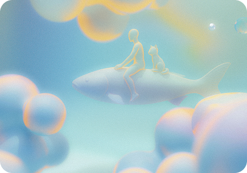
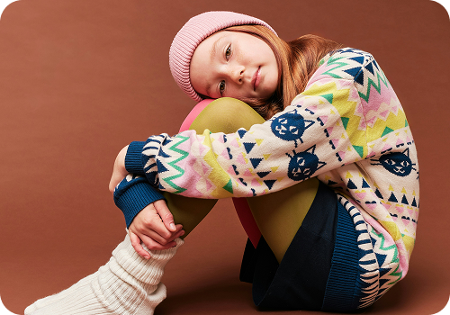
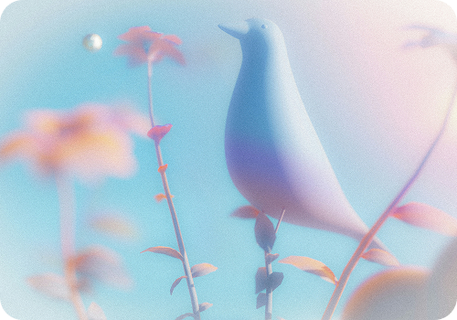

Søvn og hvile
Hvorfor har søvn betydning?
Søvn giver kroppen og hjernen mulighed for at restituere. Når du sover for lidt, kan det blive sværere at koncentrere sig, huske, lære nyt og håndtere følelser.
Prøv at lave en rolig rutine, der passer til dig: dæmp lyset, gør skoletasken klar tidligere, og læg skærmen væk inden sengetid. Det er ikke et nederlag, hvis det ikke lykkes hver aften.
Hvis du ofte ikke kan sove, vågner meget eller er så træt, at det går ud over din hverdag, så tal med en voksen eller din læge.
Som pejlemærke anbefaler Sundhedsstyrelsen typisk 9–11 timers søvn for 6–13-årige, 8–10 timer for 14–17-årige og 7–9 timer for 18–25-årige. Behovet kan variere fra person til person, så tallene er vejledende – ikke en prøve, du skal bestå.

Pauser og ro
Pauser er ikke det samme som at give op
Når du har været koncentreret længe, kan en pause hjælpe dig med at få overblik igen. En pause kan være kort og behøver ikke være produktiv.
Prøv at rejse dig, strække kroppen, få lidt frisk luft, lytte til musik eller lave noget med hænderne. Vælg noget, der føles rart for dig.
Hvis du bliver mere urolig af at sidde stille, kan en gåtur eller lidt bevægelse være bedre end at forsøge at tvinge dig selv til at slappe af.

Hverdagsglæde
Læg mærke til det, der giver dig energi
Trivsel betyder ikke, at du skal være glad hele tiden. Det handler også om at have noget i hverdagen, der giver mening, ro eller små øjeblikke af glæde.
Det kan være at høre en sang, være sammen med et dyr, spille et spil, lave mad, tegne eller være sammen med en person, du føler dig godt tilpas med.
Prøv at spørge dig selv: Hvad gjorde dagen bare en lille smule bedre? Du kan skrive det ned eller tænke over det, inden du går i seng.